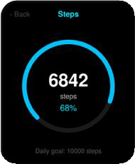
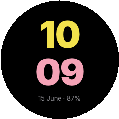
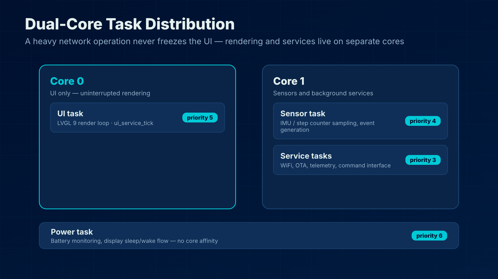

NARRTOS WEAR
Mimari

NARRTOS WEARDökümantasyon Serisi
NARRTOS WEAR
Mimari
Katmanlar, görev dağılımı, LVGL eşzamanlılık modeli, açılış akışı ve proje yapısı.






Katmanlar

Sistem beş katmandan oluşur: uygulamalar, çekirdek, servisler, sürücüler ve en altta FreeRTOS, ESP-IDF ve LVGL 9.
Üst katman alt katmanı doğrudan çağırır. Alttan üste iletişim ise olay veriyolu üzerinden gerçekleşir.
Servisler birbirine doğrudan bağımlı değildir; bir servis tek başına çıkarılabilir ya da değiştirilebilir.
Görev (task) dağılımı

Arayüz görevi sıfırıncı çekirdekte, beş önceliğinde çalışır ve LVGL çizim döngüsünü yürütür.
Sensör görevi birinci çekirdekte dört önceliğinde çalışır. WiFi, OTA, telemetri ve komut arayüzü gibi servis görevleri de birinci çekirdekte, üç önceliğindedir.
Güç görevi altı önceliğiyle en yüksek öncelikli görevdir; bataryayı izler ve ekranın uyku ve uyanma akışını yönetir.
Arayüz çizimi ile ağ işleri farklı çekirdeklerde çalıştığı için ağır bir ağ işlemi arayüzü donduramaz.
LVGL eşzamanlılık modeli
ui_service_lock(); // LVGL mutex'ini al lv_label_set_text(lbl, "merhaba"); ui_service_unlock(); // bırak // UI görevi kendi döngüsünde: uint32_t next = ui_service_tick(); // mutex içinde lv_timer_handler
LVGL kütüphanesi birden fazla görevden aynı anda çağrılmaya uygun değildir. NarRTOS'ta LVGL kilidinin sahibi ui_service'tir.
Arayüz görevinin dışından yapılacak her LVGL çağrısı ui_service_lock ile unlock arasında yer almak zorundadır.
Diğer güvenli yol, işi lv_async_call ile LVGL görevine devretmektir.
Boot akışı (1/2)
1. nvs_flash_init() // kalıcı ayar deposu (NVS)
2. i2c_bus_init() // paylaşımlı I2C veriyolu
3. axp2101_init() // PMIC: güç raylarını aç (varsa)
4. event_bus_init() // pub/sub altyapısı
5. button_handler_init() // fiziksel butonlar
6. pcf85063_init() // RTC oku -> sistem saati
time_service_init() // NTP senkron daemon'u
7. wifi_service_init() // WiFi (tercih NVS'ten okunur)
8. co5300_init() // ekran (parlaklık 0'da başlar)
9. ui_service_init() // LVGL + display driver + mutexmain.cpp içindeki app_main fonksiyonu sistemi katman katman ayağa kaldırır.
Sıra önemlidir; her adım bir öncekinin kurduğu altyapıya dayanır. Önce depolama, olay veriyolu ve güç kurulur; sonra olay altyapısı ve ekran gelir.
Boot akışı (2/2)
10. ft3168_init() // dokunmatik -> LVGL input device
11. app_manager_init() // uygulama çatısı + kayıtlar
12. alarm_service_init() // LVGL timer tabanlı zamanlayıcı
13. audio_service_init() // buzzer/ses
14. app_manager_launch(...) // ilk ekran devralınır
-> parlaklık ramp ile açılır (görsel "açılış" anı)
15. icm42670_init() // IMU
sensor_service_init() // sensör görevi (Core 1)
16. power_service_init() // güç/uyku yönetimi
17. ota_service_init() // güncelleme denetleyicisiİlk ekran devralındığında parlaklık kademeli olarak artar. Kullanıcının gördüğü açılış anı budur.
Hata toleransı ilkesi gereği dokunmatik, RTC, IMU ya da PMIC başlatılamasa bile açılış devam eder. İlgili özellik devre dışı kalır ama cihaz açılır.
Proje yapısı
NarRTOS-Wear/ ├── platformio.ini # build ortamları (env'ler) ├── partitions_custom.csv # A/B OTA partisyon düzeni ├── sdkconfig.* # ESP-IDF konfigürasyonları ├── src/ │ ├── main.cpp # boot akışı (app_main) │ ├── core/ # app_manager, event_bus, │ │ # button_handler, os_config.h │ ├── services/ # ui, power, time, wifi, ble, ... │ ├── drivers/ # display, touch, power, rtc, imu │ ├── hal/ # donanım soyutlama (I2C bus) │ ├── apps/ # uygulama katmanı │ └── assets/ fonts/ utils/ └── docs/ # dokümantasyon
Çekirdek dosyaları core klasöründedir. os_config.h sürümü, pin haritasını ve görev ayarlarını tutar; yanında app_manager, event_bus ve button_handler bulunur.
Servisler, sürücüler ve uygulamalar ayrı klasörlerdedir. Katman sınırları dosya yapısında da görünür.
NARRTOS WEAR
Servisler birbirini doğrudan çağırmaz.
Olay veriyolu ve uygulama çatısının ayrıntısı Çekirdek ve Servisler dökümanında. corezzle.com
İzlediğiniz için teşekkürler
Sıradaki videoSıradaki video
Oynatma listesiOynatma listesi
Abone olunYeni bölümlerden haberdar olun
corezzle.com · github.com/corezzle/NarRTOS-Wear